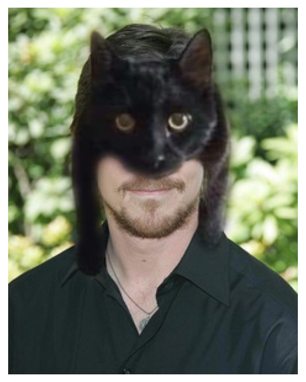
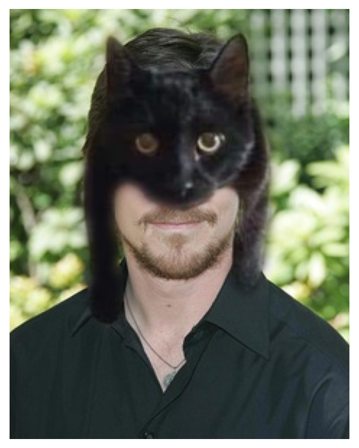

Fun with Filters and Frequencies!
 

Introduction
In this project, we will first implement our own 2D convolution function from scratch, then explore various filters and the mathematical properties of convolution operation. After that, we will apply our convolution and filtering techniques, together with knowledge of frequencies, to achieve and visualize various interesting processing tasks, including edge detection, image sharpening, hybrid images, and image blending.
Highlights
- Convolution from scratch
- Mathematical properties of convolution
- Image gradient with finite difference operators
- Image sharpening with unsharp mask filter
- Hybrid image
- Image blending with Gaussian & Laplacian stack
Fun with Filters
In this part, we will build intuitions about 2D convolutions and filtering. We will first implement convolution from scratch in two versions, 4 and 2 nested for loops respectively, and then compare our implementations with the built-in function fromscipy.signal.convolve2d. After that, we will explore the properties of the convolution operation and some common filters through several experiments.
Part 1.1: Convolutions from Scratch
Recall that convolution operation (denoted as "$\star$") that convolving an filter $F$ on $H$ in $2d$ space involves sliding the flipped filter (otherwise will be cross-correlation operation "$\otimes$") over the image and computing the weighted sum of the overlapping pixels, which is mathematically expressed as: $$ G = H \star F \Longleftrightarrow G(i,j) = \sum_{u=-k}^{k} \sum_{v=-k}^{k} H[u,v]F[i-u,j-v]$$
Here we implement 2D convolution using 4 nested for loops first, and then vectorize to get a 2 for loop version. For the four-loop version, the outer two loops iterate over the pixels of the image to be filtered, and the inner two loops iterate over the filter kernel to compute the weighted sum within the filter window. Since the weighted sum is a sum of element-wise products, I vectorized the inner two loops into a single operation to achieve my two-loop version.
To ensure direct comparability with the convolution function from scipy, I adopted the same argument design, output conventions, and documentation style. I implemented two modes, valid and same, where the former returns only parts of the image that the filter can fully cover (i.e., will reduce the image size), and the latter pads the image with fillvalue first (default is $0$ in my implementation) to ensure the output has the same size as the input image. The code snippets are attached as follows.
Code Snippet 1: four-for-loop version with only numpy
def conv2d_4for(in1, in2, mode='same', boundary='fill', fillvalue=0):
""" Convolve two 2-dimensional arrays using 4 for loops
Convolve in1 and in2 (the kernel) with output size determined by mode, and boundary conditions
determined by boundary and fillvalue
Args:
in1 (array_like): first input array
in2 (array_like): second input array (the kernel). Should have the same number of dimensions as in1
mode (str, optional): 'valid', or 'same' (the 'full' option is not implemented in this project)
boundary (str, optional): 'fill' (the only option implemented in this project)
fillvalue (scalar, optional): value to fill pad input arrays with, default is 0
Returns:
out (ndarray): a 2-dimensional array containing a subset of the discrete linear convolution of in1 with in2.
"""
# get np arrays
in1 = np.asarray(in1)
in2 = np.asarray(in2)
# check in1 and in2 are same dimension
if in1.ndim != in2.ndim or in1.ndim != 2 or in2.ndim != 2:
raise ValueError("inputs should be 2d arrays")
# flip the kernel for true convolution
in2 = np.flip(in2, axis=(0,1))
# 'valid' mode
if mode == 'valid':
# initialize output array, size = in1-in2+1
out = np.zeros_like((in1.shape[0]-in2.shape[0]+1, in1.shape[1]-in2.shape[1]+1))
# loop through pixels of in1
for i in range(in1.shape[0]-in2.shape[0]+1):
for j in range(in1.shape[1]-in2.shape[1]+1):
# loop through pixels of in2
for u in range(in2.shape[0]):
for v in range(in2.shape[1]):
out[i,j] += in1[i+u,j+v] * in2[u,v]
# 'same' mode
elif mode == 'same':
# pad in1 with fillvalue
pad_h = in2.shape[0]//2
pad_w = in2.shape[1]//2
in1_pad = np.pad(in1, ((pad_h, pad_h), (pad_w, pad_w)), constant_values=fillvalue)
# initialize output array, size = in1
out = np.zeros_like(in1)
# loop through pixels of in1_pad
for i in range(out.shape[0]):
for j in range(out.shape[1]):
# loop through pixels of in2
for u in range(in2.shape[0]):
for v in range(in2.shape[1]):
out[i,j] += in1_pad[i+u,j+v] * in2[u,v]
else:
raise ValueError("please choose mode from 'valid' or 'same'")
return outCode Snippet 2: two-for-loop version after vectorization of inner two loops
def conv2d_2for(in1, in2, mode='same', boundary='fill', fillvalue=0):
... # same as above four-for-loop version # ...
# 'valid' mode
if mode == 'valid':
... # same as above four-for-loop version # ...
for i in range(in1.shape[0]-in2.shape[0]+1):
for j in range(in1.shape[1]-in2.shape[1]+1):
# vectorize each kernel window
kernel_window = in1[i:i+in2.shape[0], j:j+in2.shape[1]]
out[i,j] = np.sum(kernel_window * in2)
# 'same' mode
elif mode == 'same':
... # same as above four-for-loop version # ...
for i in range(out.shape[0]):
for j in range(out.shape[1]):
# vectorize each kernel window
kernel_window = in1_pad[i:i+in2.shape[0], j:j+in2.shape[1]]
out[i,j] = np.sum(kernel_window* in2)
... # same as above four-for-loop version # ...
return outComparison of Different Implementations
To verify the correctness of my implementation and their efficiency, here I convolved my selfie with a $9\times9$ box filter, two finite difference operators $D_x = [1, 0, -1]$ and $D_y = [1, 0, -1]^{\top}$ via my conv2d_4for, conv2d_2for and the convolve2d of scipy, respectively. One can see that they all show the same output, which proves that my implementations are correct. Also, after vectorizing the two inner loops, the efficiency increased a lot; however, still not comparable to the optimal implementation from scipy.

Part 1.2 Finite Difference Operator
Image gradient is the directional change in the intensity or color in an image, which is mathematically a 2D vector with the components as partial derivatives of the image intensity function (a two-variable function) with respect to $x$ and $y$ directions, i.e., $$\nabla I = \left[ g_x,\, g_y \right]^{\top} = \left[ \frac{\partial I}{\partial x}, \, \frac{\partial I}{\partial y} \right]^{\top}$$
Since the intensity function is discrete for digital images, it is common to assume that there is an underlying continuous function and approximate the partial derivatives using finite difference methods implemented via convolution with small kernels. A common choice is: $$ \frac{\partial I(x,y)}{\partial x} \approx \frac{I(x+1,y) - I(x-1,y)}{2} = \frac{1}{2} \cdot \begin{bmatrix} 1 & 0 & -1 \end{bmatrix} \star I = D_x \star I$$ $$ \frac{\partial I(x,y)}{\partial y} \approx \frac{I(x,y+1) - I(x,y-1)}{2} = \frac{1}{2} \cdot \begin{bmatrix} 1 & 0 & -1 \end{bmatrix}^{\top} \star I = D_y \star I$$
Then, we can compute the gradient magnitude that describes how quickly the image intensity changes at each pixel: $$ \|\nabla I\| = \sqrt{\left(\frac{\partial I}{\partial x}\right)^2 + \left(\frac{\partial I}{\partial y}\right)^2} $$
NOTE: In my implementation, I used the project statement suggested $D_x=\begin{bmatrix} 1 & 0 & -1 \end{bmatrix}$ and $D_y = \begin{bmatrix} 1 & 0 & -1 \end{bmatrix}^{\top}$ without the $1/2$ factor, since it does not affect the relative magnitudes and the binarization thresholding. For the direction of gradients, since the kernels are flipped during convolution, the resulting gradients are positive in the right/down directions and negative in the left/up directions.
Visualization of Image Gradients & Magnitude Obtained from $D_x$ and $D_y$
Let's convolve $D_x$ and $D_y$ to the image cameraman and see what we get. Ideally, image gradients should visually highlight edges, where the $D_x$, $D_y$ provide the vertical and horizontal edges, and the gradient magnitude $\|\nabla I\|$ gives the overall strength of the edges. Furthermore, if we binarize $\|\nabla I\|$ with a threshold, we can obtain a cleaner edge map (if the threshold is tuned appropriately).
There is a trade-off between edge preservation and noise suppression: higher thresholds can suppress more noise but may also remove fine details, causing discontinuities of the edges, while lower thresholds may preserve more details but also retain more noise. However, since $D_x$ and $D_y$ are very sensitive to high frequencies, finding an appropriate threshold becomes critical but challenging. Instead using the values of $\|\nabla I\|$ directly, I define the thresholds based on the $\max \|\nabla I\|$, hence, $\text{threshold} = \alpha \times \max \|\nabla I\|$. A set of thresholds is tested and visualized below.
As a balanced choice, here we adopt $\alpha = 0.15$ for our threshold, which preserves most major edges without discontinuity, while suppressing noises to an acceptable range. Then, the visualization of each aspect of image gradients is shown in the following figure.
However, one can see that there are still very tiny white nodes in the background of the binarized edge magnitude, and the edges are not smooth enough. They can be somewhat optimized by further fine-tuning the threshold for sure, but can not be fully resolved in this way; it is too time-consuming! This threshold is, though not perfect, we keep it here on purpose to demonstrate how this issue can be more efficiently addressed by applying a low-pass filter to remove the high-frequency noise before $D_x$ and $D_y$, as discussed in the next part.
Part 1.3: Derivative of Gaussian (DoG) Filter
As discussed above, applying $D_x$ and $D_y$ directly produces noisy estimates of the image gradient, since they are sensitive to high-frequency noise and will amplify it. Therefore, to suppress such high-frequency noise, here we can first smooth the image by convolving it with a low-pass Gaussian filter ($G$), and then apply the finite difference operators, thus, $D_x \star G \star I$ and $D_y \star G \star I$. The results are shown in the second line of following figure.
Achieve $G$ $+$ $D_x$(or $D_y$) with a Single Convolution
Recall that convolution is associative, i.e., $A \star (B \star C) = (A \star B) \star C$, we can combine the operations of Gaussian smoothing and finite difference into a single convolution, namely the Derivative of Gaussian (DoG) filter, through convolving the Gaussian kernel with the finite difference kernels: $$ DoG_x = D_x \star G $$ $$ DoG_y = D_y \star G $$
Then as shown in the third line of following figure, we can apply the $DoG$ filters to the image directly to get exactly the same results as the two-step process (Gaussian + Finite Difference): $$ DoG_x \star I = D_x \star G \star I $$ $$ DoG_y \star I = D_y \star G \star I $$
Visualization of Image Gradients & Magnitude Obtained from DoG Filters
With the same threshold $\alpha = 0.15$, after filtering out the high-frequency noise, the binarized gradient magnitude visualization looks much cleaner, where the edges are more continuous, smooth, but sort of "thickened" due to the Gaussian smoothing. Besides, it can be observed that the $DoG$ filters produces the same results as the two-step process.
Bells & Whistles: Image gradient orientations & HSV visualization
Recall that the gradient provides the information about both how quickly the intensity changes (magnitude), and the direction of the change (orientation). Here we visualize the image gradient orientations, defined as: $$ \theta = \tan^{-1}\left[\frac{g_y}{g_x}\right] = \tan^{-1}\left[\frac{\partial I/\partial y}{\partial I/\partial x}\right] $$
Two candidate functions are available, np.arctan and np.arctan2. Since the former's output angle is restricted to the range of $[-\pi/2, \pi/2]$ while we want the full range of all four quadrants, I use np.arctan2 in my implementation, which returns the value in the range of $[-\pi, \pi]$. The output is defined as "signed angle in radians between the ray ending at the origin and passing through the point $(1,0)$, and the ray ending at the origin and passing through the point $(x_2, x_1)$." Therefore, we can see that the angle is $0$ when the gradient points to the right, and positive rotate counterclockwise. For better visualization, I map the angle range from $[-\pi, \pi]$ to $[0, 360]$ degrees and visualize it using the HSV color map. The process is as follows:
- Compute image gradients using DoG filters, i.e., $g_x = DoG_x \star I$ and $g_y = DoG_y \star I$
- Compute the angle $\theta = \tan^{-1}(g_y/g_x)$ using
np.arctan2, resultinggrad_oriin the range of $[-\pi, \pi]$ - Map the angle from radians to degrees and shift the range to $[-180, 180]$ through
grad_ori = grad_ori/np.pi*180 - Further map the range to $[0, 360]$ through
grad_ori[grad_ori<0]+=360 - Mask out the pixels with small gradient magnitudes with the same threshold as the previous binarization step
- Visualize (1) all the gradients, and (2) the orientations using a customized HSV color map, while those pixels masked out in step 5 are shown in black
The cameraman's gradient orientations are visualized as follows:
Fun with Frequencies!
Part 2.1: Image "Sharpening"
The Gaussian filter is a low-pass filter, which suppresses high frequencies in the image while maintaining low frequencies. On the other hand, an image will be visually "sharpened" if we amplify its high frequencies. Therefore, we can sharpen an image by adding more high frequencies, which can be achieved by subtracting the low-pass filtered image from the original image: $$ I_{sharp} = I + \alpha (I - G \star I) $$
where $\alpha$ is the hyperparameter that controls how many high frequencies are added back, i.e., how sharp the output image we want. Recall that convolution with a fixed kernel is a linear operation; therefore, the above equation can be rewritten as a single convolution, namely unsharp mask filter: $$ I_{sharp} = I + \alpha (I - G \star I) = (1+\alpha)I - \alpha G \star I = I \star ((1+\alpha)e - \alpha G) $$ where the $e$ is the unit impulse (i.e., identity filter with value 1 at the center and 0 elsewhere).
Experiments & Discussion
After convolving blurry images with aforementioned unsharp mask filter with different $\alpha$ values, the results are shown below. It is apparent that with the increase of $\alpha$, i.e., adding more high frequencies, the images become sharper as expected. Of course, we can't increase it without any worries, otherwise the sharpened image will become unnatural and noisy.

What if we have a sharp image, can we make it blurred first, and then sharpen it back? Well, apparently, we can always get any image "sharpened" with our unsharp mask filter. However, at this time, the result is not as good as the original one, since blurring itself is a lossy operation, and we cannot recover the lost high-frequency details from unsharp mask filter constructed on the blurred image.
Part 2.2: Hybrid Image
Hybrid images are static images with two interpretations, which change as a function of viewing distance or presentation time. It is created by superimposing the low and high spatial frequencies from two different images; thus, when viewed from close (or the image presented for a long time), the high-frequency image dominates the perception, while from far away (or the image was only shown for a short time), the low-frequency image takes over. Specifically, the low spatial scale image is obtained by filtering the image with a low-pass filter (e.g., Gaussian), while the high spatial scale one is produced by applying a high-pass filter, and the final hybrid image is simply the summation of them with appropriate alignment.
Recall that the 2D Gaussian filter in the spatial domain is defined as: $$ g(x,y;\sigma) = \frac{1}{2\pi\sigma^2} \exp\left(-\frac{x^2 + y^2}{2\sigma^2}\right) $$
Defining its radial frequency as $f = \sqrt{f_x^2 + f_y^2}$, we then have Gaussian in frequency domain after applying 2D Fourier Transform: $$ G(f_x,f_y;\sigma) = \exp\left(-2\pi^2\sigma^2 (f_x^2 + f_y^2)\right) = \exp\left(-2\pi^2\sigma^2 f^2\right) $$ where the frequency is typically in the unit of cycles per pixel (c/p). However, in the original paper of hybrid images, the authors adopted cycles per image (c/i) as the unit to get rid of the dependency on image resolution and size, which can be converted through: $$ f_{c/i} = f_{c/p} \times N $$ where $N$ is the image width or height in pixels (if height and width are different, use the short one).
Given two images $I_1$ and $I_2$ and their corresponding low-pass Gaussian filters $G_1$ and $G_2$, the hybrid image $H$ in frequency domain is defined as: $$ H = I_1 \cdot G_1 + I_2 \cdot (1 - G_2) $$ where the first term is the low frequencies from $I_1$ and the second term is the high frequencies from $I_2$ since $(1 - G_2)$ acts as a high-pass filter. This can be further extended to a weighted combination: $$ H = w_1 \cdot I_1 \cdot G_1 + w_2 \cdot I_2 \cdot (1 - G_2) $$ where $w_1$ and $w_2$ are the weights for the two components, respectively.
Two important parameters need to be specified for $H$, i.e., the frequency cut-off frequencies for the low and high resolution images. From the original paper, the authors suggested "setting the cut-off frequency for the amplitude gain of the filter is $1/2$," thus, if $f$ is given in c/p (the default unit), then we can compute the corresponding $\sigma$ for the Gaussian filter through: $$ G(f;\sigma) = \exp(-2\pi^2\sigma^2 f_{c/p}^2) = \frac{1}{2} \quad \Rightarrow \quad \sigma = \sqrt{\frac{\ln2}{2\pi^2 f_{c/p}^2}} = \sqrt{\frac{\ln2}{2\pi^2 (f_{c/i}/N)^2}} = \frac{N\sqrt{ln2}}{\sqrt{2}\pi f_{c/i}}$$
Theoretically, any two images can be combined to form a hybrid image. However, the successful hybrid images, i.e., almost impossible to consciously switch to the other interpretation when one percept dominates, except for changing the viewing distance, usually share some similar patterns. Here we follow the rules of thumb suggested in the original paper:
- Avoid symmetry and repetitiveness of pattern in the low spatial frequencies (blobs), which may form a strong percept that is difficult to dominate. Such an issue can be mitigated by introducing some "accidental alignments", i.e., aligning some features in two images such that the boundaries of low frequencies are "explained away" by the details of high frequencies.
- Add color to the high frequencies to create illusions such that the low frequencies are perceived less strongly, e.g., make them look like shadows of the high-frequency image.
- Enlarge the gap between the two cut-off frequencies to create a more distinct separation of scales, e.g., the author adopted $f_1=16 c/i$ and $f_2=48 c/i$.
Experiments & Discussion
Following the aforementioned process and rules, here we experiment on the images Derek (providing low frequencies) and Nutmeg (providing high frequencies). After some tests, the cut-off frequencies are set to be $f_{H} = 42\, c/i$ and $f_{L} = 12\, c/i$, which further gives the $\sigma$ values and kernel sizes for Gaussian filters of each image, following the equations derived above. The filtered images are further summed up with weighting of $w_{H} = 1.5$ and $w_{L} = 0.5$, respectively. The final hybrid image and corresponding process for analysis are shown below.
We can observe from comparing the log FFT before and after filtering that the high frequencies in image_L and the low frequencies of image_H are filtered out successfully, where the former loses its outer part and the latter loses its central region. The hybrid image, after coming from the filtered images, again recovers almost the whole frequency domain. You can interpret Nugmug's face when looking at the large image closely, and see Derek's face by stepping back.
Another two image pairs are tested and shown as follows: (1) The bell towers of Berkeley and Stanford. and (2) Two expressions of my favorite comedian Stephen Chow.
Bells & Whistles: Coloring Analysis of Hybrid Images
How about coloring affect the hybrid imges? Four coloring schemes of two hybrid images are visualized below: (1)both high frequencies and low frequencies are colored, (2) only color low frequencies while keep high frequencies grascaled, (3) only color high frequencies, and (4) both frequencies are grayscaled. Recall that coloring will somewhat guide and emphasize our attention to objects, therefore, whether applying colors to high or low frequency may depend on which object we want to emphasize in our hybrid image, and how different two images are.
For instance, if the alignment itself is perfect and two images are almost the same, say, the Stephen Chow's case, coloring is sort of unimportant here. However, if two images are different (the Derek & Nugmug case , and two bell towers case), coloring the low frequencies will always guide us to notice the of low frequency components no matter the distance between us, hence, affecting us interprete high frequencies. On the other hand, as what the author mentioned in their paper, only coloring high frequencies can create illusions such that the low frequencies are perceived less strongly, e.g., make them look like shadows of the high-frequency image (e.g., the bell towers case, where Hoover tower's red hat is too apparent to be ignored if we color it).
As a conclusion, (1) if the two images are perfectly aligned and almost the same, coloring is not a bit problem to consider, (2) if images are different, and we already well-aligned them, then, coloring high frequencies can almost always helpful, but whether coloring low frequencies depending on whether we want them always being the main object regardless of distance, or we want them not affecting interpretation of low frequencies.
Multi-resolution Blending and the Oraple Journey
Here, we explore the image blending (a.k.a., spline) problem, which aims to blend two images together as seamlessly as possible. Suppose we have two images $Il(i)$ and $Ir(i)$ at left and right respectively to be blended in the horizontal direction (with a vertical seam) at point $\hat{i}$ (simplified to one dimension for demonstration), and we want to blend them through monotonic weighting functions $Hl(i)$ and $Hr(i) = 1 - Hl(i)$, i.e., only keep left part of $Il$ and right part of $Ir$ with a smooth transition zone around $\hat{i}$. Then, the blended image $I(i)$ can be computed as: $$ I(i) = Il(i) \cdot Hl(i - \hat{i}) + Ir(i) \cdot Hr(i - \hat{i}) $$
If we define $T$ as the width of transition zone, i.e., $T = i_2 - i_1$ where $i_1$ and $i_2$ are the start and end points of the transition zone, then it is apparent that the choice of $T$ will significantly affect the blending quality, even if we have a well-designed weighting function $Hl(i)$:
- If $T$ is too small, the transition zone may be too narrow and result in a visible seam
- On the other hand, if $T$ is too large, the transition may cover too much area of each image, yielding a ghosting effect where both images are visible in the blended result
Burt and Adelson pointed out in their paper that "a suitable $T$ can only be selected if the images to be blended occupy a relatively narrow band of spatial frequencies," also, $T$ should (1) be at least comparable in size to the largest prominent features and (2) not be much larger (e.g., twice) than the smallest prominent features, both of which ensure that transition zone does not cover multiple features. Accordingly, they propose a rule of thumb that "the band width of images to be blended should be roughly one octave (i.e., maximum frequency is twice the minimum frequency)."
However, images in the real world usually contain a wide range of spatial frequencies instead of a one-octave band, making it impossible to select a single $T$ that works for blending all the features. To address this issue, here we follow the idea of Burt and Adelson to:
- decompose each image into a set of band-pass component images, each of which approximatly occupies a one-octave band of spatial frequencies and adjacent bands‘ limit differ by one-octave step, hence, uniformly cover the whole original frequency range with some overlap between adjacent bands
- blend the corresponding band-pass images with a suitable $T$, where the effective transition width $T$ naturally scales with the band’s spatial frequency (wide for low-frequency, narrow for high-frequency)
- reconstruct the blended image by summing up all blended band-pass images/li>
In the following parts, we will go through each step in detail.
Part 2.3: Gaussian and Laplacian Stacks
Decomposing Images into Band-pass Components through Pyramids
Let's first explore the aforementioned step 1, i.e., decompose each image into a set of band-pass component images each of which approximatly covers a one-octave band of spatial frequencies. Burt and Adelson built a Gaussian pyramid ($G$) and then a Laplacian pyramid ($L$) to achieve this goal. In their approach, a Gaussian pyramid is constructed by repeatedly applying a $5\times5$ Gaussian-like filter to the last level and down-sampling it by a factor of 2, which naturally creates a series of images with approximately one-octave band step between adjacent levels. Then, the Laplacian pyramid, whose each level is the difference between adjacent levels of the Gaussian pyramid after up-sampling the higher one (except for the last level, which is the same as the last level of Gaussian pyramid), is computed to get the approximately one-octave band-pass images. The process can be mathematically described as follows:
- For an image $I$ at level $0$, the Gaussian pyramid $G_0$ is simply the original image, i.e., $G_0 = I$
- For any level $1 \le l \le L-1$, the Gaussian pyramid at this level is: $$ G_{l} = \text{downsample}(w \star G_{l-1}) $$ where $w$ is the $5\times5$ Gaussian-like filter, and `downsample` means down-sampling the image by a factor of 2
- Then, the Laplacian pyramid $L$'s highest level is the same as the Gaussian pyramid's, i.e., $L_{L-1} = G_{L-1}$
- For any level $0 \le l \le L-2$, the Laplacian pyramid at this level is: $$ L_{l} = G_{l} - \text{upsample}(G_{l+1}) $$ where
upsamplemeans up-sampling the image by a factor of 2
Equivalent Implementation through Gaussian and Laplacian Stacks
At Burt and Adelson's time, the computational resources and efficiency were major concerns; thus, they adopted the pyramid structure through iteratively filtering (with the same kernel) and down-sampling for step 1. Instead, any method that produces such a set of band-pass images can be used. Here we adopt a more straightforward approach, i.e., directly convolving the original image $I$ with a set of Gaussian filters $g$ (to avoid abuse of notation, here we use lower case to denote the Gaussian filters while upper case $G$ for the Gaussian pyramid/stack) with increasing low-pass filtering scales $\sigma$. Specifically, we first define a starting scale $\sigma_0$, then, to ensure that the rule of "approximately one-octave band step between adjacent levels" is satisfied, we can set the scale at level $l$ as $\sigma_l = \sigma_0 \cdot 2^l$. Then, the Gaussian stack $G$ can be computed as:
- $G_0 = I$ as the original image
- For any level $1 \le l \le L-1$, $$G_l = g(\sigma_l, k_l) \star I$$ where $g(\sigma_l, k_l)$ is the Gaussian filter with scale $\sigma_l$ and kernel size $k_l = 6\sigma_l + 1$ (to ensure that over 99% of the Gaussian energy is covered)
- Then, except for the highest level, which is again $L_{L-1} = G_{L-1}$, the Laplacian stack $L_l$ for any level $0 \le l \le L-2$ can be computed as: $$ L_l = G_l - G_{l+1} $$
This stack structure is functionally equivalent to the pyramid structure proposed by Burt and Adelson, and actually, they also mentioned in their paper about the "equivalent weighting functions $W$" that can be used to generate the band-pass images through filtering the original image directly. The results and visualization of Gaussian and Laplacian stacks are shown together with blended images at the end of next part.
Part 2.4: Multiresolution Blending (a.k.a. the oraple!)
Once we obtained the band-pass images from step 1 as introduced in Part 2.3 above, steps 2 and 3 are trivial. Recall that step 2 requires us finding a transition weighting function with suitable width $T$ for each band-pass image pair, say, $T_l$ for level $l$, such that the rule mentioned in the beginning of this section is satisfied ($T_l$ is at least comparable in the size of the largest prominent features and not be twice larger than the smallest ones at level $l$).
From Burt and Adelson's paper, the weighting function $H$ for blending arbitrary shapes (not limited to blending two images with vertical transition zones) is appropriate to be defined as "a Gaussian stack of a binary mask $M$ that constructed under the same process and with the same size as the blended images", here we denote as $H = G^M$. Instead of using a binary mask for the first layer, we can also implement a soft mask as the initial weighting function, e.g., convolve the binary mask with a Gaussian filter first before constructing Gaussian stack, which is the adopted method in my implementation. Then, the blending at level $l$ between two images $A$ and $B$ can be computed on their band-pass images $L^A_l$ and $L^B_l$ as weighted sum as follows: $$ L_l = L^A_l \cdot G^M_l + L^B_l \cdot (1 - G^M_l) $$ where $L_l$ is the blended band-pass image at level $l$, i.e., the $l$-th level of the blended Laplacian stack.
And finally, the blended image can be reconstructed by simply collapsing the blended band-pass images in the Laplacian stack: $$ I = \sum_{l=0}^{L-1} L_l $$
Experiments & Discussion
Following the implementation details outlined above, here we present and visualize the process and results of some experiments. The process and intermediate results of blending our "oraple" is shown in the figure below, following the style of the original paper, i.e., showing low, medium, and high frequency layers. There were 5 layers in total, binary mask was first blurred to a soft mask for generating the Gaussion mask stack, and $\sigma_0$ was set to 1.
Some other results are shown as follows, including (1) two expressions of Stephen Chow (unhappy and happy), and (2) new "catman" mask for Bruce Wayne.
If you are interested, the blending process of the "catman" is shown below since its binary mask is irregular.
Bells & Whistles: Enhancing Image Blending with Color
Here, let's explore if and how the choice of color or grayscale affects the blending results. The grayscaled version of two of the colorful blend images are shown below. One can see that there is almost no difference in detail blending compared to the colored versions, at least I can not distinguish them in detailed feature level at the seams. However, since color itself can provide us visual information, the transition zone will still be visually apparent and somewhat unnatural when the colors are in strong contract, especially if there are very tiny and high frequent features (e.g., the fluff of the cat). For such cases, if we move blending operation to grascale, hence, throughing away color information and only keep intensities, then the illusion caused by color will be supressed, and the blending will look more natural. In conclusion, the algorithm performs similarly, but removing chroma (grayscale) reduces the perceived seam visibility.